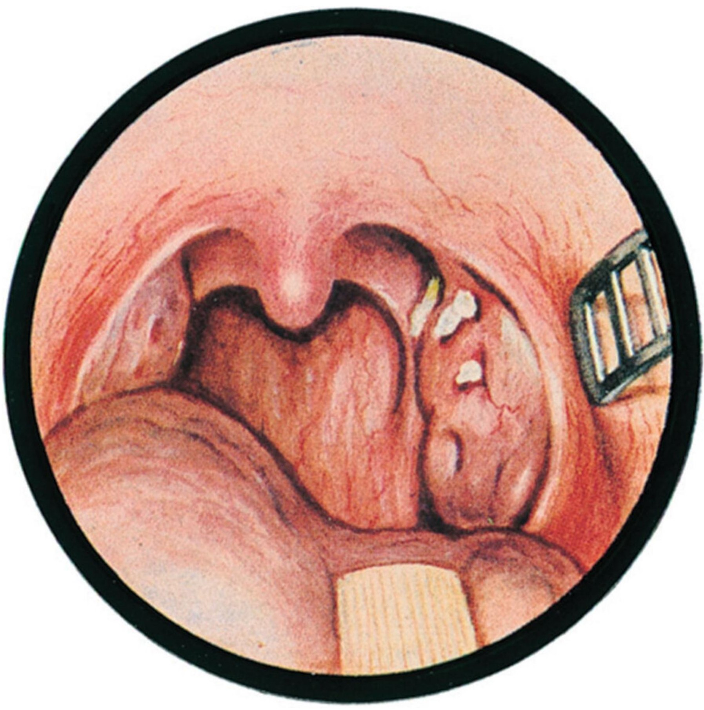

Сверка с PDF рубрикатора выполняется…
Хронический тонзиллит
Клинические рекомендации от 20.11.2024 · взрослые и дети
Основные положения
- Диагноз устанавливается на основании данных фарингоскопии: решающее значение имеют местные признаки хронического воспаления миндалин, наиболее важным из которых является жидкий гной в лакунах. Размер миндалин диагностического значения не имеет.
- В период острого воспаления глотки диагноз хронического тонзиллита не устанавливают: достоверная оценка его признаков возможна только через 3–4 недели после купирования острого процесса.
- По классификации Солдатова выделяют компенсированную и декомпенсированную формы; форму определяют по анамнезу за последние три года.
- Консервативное лечение назначают курсами в межрецидивный период:
- компенсированная форма: 2 раза в год, весной и осенью;
- рецидивирующие ангины: до 4 раз в год, за 1–1,5 месяца до ожидаемого обострения.
- Показания к тонзиллэктомии:
- любой вид декомпенсации, кроме рецидивов ангин без проведённого противорецидивного лечения;
- рецидивирующие ангины при неэффективности противорецидивного лечения;
- у детей частые стрептококковые ангины: не менее 7 за последний год, не менее 5 в год за последние 2 года или не менее 3 в год за последние 3 года.
Клиническая картина и классификация
Определение
Хронический тонзиллит является инфекционно-аллергическим заболеванием всего организма с местными проявлениями в виде стойкого воспаления нёбных миндалин с альтерацией, экссудацией и пролиферацией.
Местные признаки
- гиперемия и валикообразное утолщение краёв нёбных дужек;
- рубцовые спайки между миндалинами и нёбными дужками;
- разрыхлённые или, напротив, рубцово изменённые и уплотнённые миндалины;
- казеозно-гнойные пробки или жидкий гной в лакунах;
- увеличение регионарных лимфатических узлов.
Хронический тонзиллит

- признак Гизе: гиперемия краёв передних нёбных дужек;
- признак Зака: отёк в месте соединения передних и задних дужек;
- признак Преображенского: валикообразное утолщение краёв верхних отделов передних и задних дужек.
Классификация Солдатова
- местные признаки;
- общие симптомы нерезко выражены или отсутствуют.
- рецидивы ангин;
- паратонзиллит или паратонзиллярный абсцесс;
- тонзиллогенная интоксикация: длительный субфебрилитет, недомогание, снижение трудоспособности при отсутствии другой причины;
- тонзиллогенные функциональные нарушения внутренних органов;
- заболевания органов, патогенетически связанные с тонзиллитом.
Форму определяют по данным анамнеза за последние три года.
Классификация Преображенского — Пальчуна
- только местные признаки;
- в подавляющем большинстве случаев в анамнезе ангины.
- субфебрилитет;
- слабость, быстрая утомляемость;
- боли в суставах;
- увеличение и болезненность регионарных лимфатических узлов;
- непостоянные функциональные нарушения со стороны сердца;
- нестойкие отклонения лабораторных показателей.
- функциональные нарушения сердечной деятельности, подтверждённые электрокардиографией (ЭКГ);
- сердцебиение и нарушения ритма;
- боли в области сердца и в суставах как во время ангины, так и вне её;
- функциональные нарушения почек, печени, суставов и сосудов.
- паратонзиллярный абсцесс;
- парафарингит;
- тонзиллогенный сепсис;
- ревматизм;
- артрит;
- приобретённые пороки сердца;
- гломерулонефрит.
Описано около 100 заболеваний, патогенетически связанных с хроническим тонзиллитом; наиболее часто поражаются сердце, суставы, почки, эндокринная система и кожа. В сложных случаях тактика ведения определяется совместно с профильным специалистом.
Жалобы и анамнез
- незначительная боль;
- першение;
- ощущение инородного тела в горле;
- периодический сухой кашель;
- неприятный запах изо рта.
Жалобы неспецифичны: встречаются также при хроническом фарингите, заболеваниях гортани, полости рта и зубов; у части пациентов жалоб нет.
- длительное недомогание;
- снижение работоспособности;
- затяжной субфебрилитет.
Эти жалобы неспецифичны и требуют обследования для исключения других причин.
У детей и взрослых, особенно часто и длительно болеющих, уточняются местные и общие жалобы, а также частота ангин. Многие авторы считают ангины в анамнезе наиболее достоверным признаком хронического тонзиллита, однако сведения о них должны быть подтверждены.
Скрыто: болезни, связанные с тонзиллитом.
В учебнике: ангины, тонзиллит и фарингит. Анатомия и физиология: глотка.
Диагностика
Диагноз устанавливают на основании
- анамнеза: ангины, длительная утомляемость, субфебрилитет, регионарный лимфаденит, сопряжённые с тонзиллитом заболевания;
- физикального обследования;
- лабораторных данных;
- фарингоскопии.
Фарингоскопия
- дети и взрослые: исключение острого тонзиллита и выявление местных признаков хронического тонзиллита.
При остром воспалении глотки диагноз хронического тонзиллита не устанавливают: достоверная оценка признаков возможна только через 3–4 недели.
- яркая гиперемия и отёк слизистой оболочки нёбных дужек, нёбных миндалин, задней стенки глотки, реже мягкого нёба и нёбного язычка;
- экссудат и налёты на нёбных миндалинах, реже на задней стенке глотки;
- регионарный лимфаденит: болезненность, увеличение, уплотнение поднижнечелюстных, задненижнечелюстных, передних и задних шейных лимфатических узлов;
- петехиальная энантема на мягком нёбе и нёбном язычке.
Обследование всех пациентов включает осмотр верхних дыхательных путей с использованием дополнительных источников света, шпателя и зеркал, фарингоскопию и эпифарингоскопию.
- решающее значение имеют фарингоскопические признаки;
- наиболее важный признак: жидкий гной в лакунах, нередко с неприятным запахом;
- увеличение регионарных лимфатических узлов может быть обусловлено и другими воспалительными процессами головы и шеи;
- размер миндалин диагностического значения не имеет.
У детей гипертрофия глоточной и нёбных миндалин часто сопутствует хроническому тонзиллиту и может способствовать его развитию.
Осмотр при ярком направленном освещении двумя шпателями, при необходимости зондом.
За 20–30 минут до осмотра пациенту не рекомендуется (иначе возможна транзиторная гиперемия)- принимать пищу;
- пить горячие, холодные и газированные напитки;
- курить;
- разговаривать на холоде.
Надавливание вторым шпателем на нёбную дужку выявляет содержимое лакун и спайки.
Анализы крови и мочи
- выявление сопряжённых с тонзиллитом заболеваний.
- общий анализ крови;
- общий анализ мочи;
- С-реактивный белок (СРБ);
- ревматоидный фактор.
Антистрептолизин-О
- дифференциальная диагностика активной стрептококковой инфекции и носительства.
Высокий уровень АСЛ-О при отсутствии стрептококка в посевах свидетельствует о возможной внутриклеточной персистенции и рассматривается как подтверждение декомпенсации.
Однако высокий уровень АСЛ-О без симптомов со стороны миндалин сам по себе не является показанием к лечению и требует бактериологического исследования отделяемого из зева на стрептококк группы А или экспресс-теста.
При характерной для хронического тонзиллита внутриклеточной персистенции стрептококков культуральный метод возбудитель не выявляет. Выделение стрептококков затруднено при наличии в материале гемолитических стафилококков. Даже однократный приём системного антибиотика резко снижает вероятность выявления возбудителя культуральным методом.
| Возраст | Норма АСЛ-О, МЕ/мл |
|---|---|
| До 7 лет | до 100 |
| 7–14 лет | 150–200 |
| С 14 лет | до 250 |
Исследование на БГСА
- бактериологическое исследование отделяемого с нёбных миндалин на бета-гемолитический стрептококк группы А (БГСА) или экспресс-тест.
Анализы крови и мочи, посевы и цитологическое исследование содержимого лакун для постановки диагноза практически не имеют значения. Они необходимы для уточнения формы заболевания, роли микрофлоры, связи с заболеваниями других органов и оценки эффективности лечения.
Лазерная допплеровская флоуметрия, ультразвуковое исследование (УЗИ) и другие дополнительные методы пока не получили распространения, доказательства их эффективности отсутствуют.
Скрыто: зачем нужны посевы, дополнительные методы.
Лечение
Перед началом любого лечения необходимы осмотр и при необходимости санация зубов, околоносовых пазух и носоглотки.
При обострении (ангине)
Тактика при ангине определяется клиническими рекомендациями «Острый тонзиллит и фарингит», а при паратонзиллите и паратонзиллярном абсцессе рекомендациями «Паратонзиллярный абсцесс». Курсы лечения хронического тонзиллита назначают в межрецидивный период.
Взрослым при обострении рекомендованы нестероидные противовоспалительные препараты (НПВП) для местного применения.
Системные антибиотики
- в период обострения, при выделении стрептококка или клинических признаках тонзиллогенных осложнений: бета-лактамные препараты, прежде всего пенициллины;
- вне обострения, при клинических признаках функциональных изменений внутренних органов, отрицательных посевах на БГСА и стойко повышенном АСЛ-О: предпочтительны современные 14-членные макролиды, курс до 2 недель.
Целесообразность антибактериальной терапии в межрецидивный период остаётся дискутабельной, поэтому решение принимается индивидуально на основании объективных данных, динамики симптомов и лабораторных показателей.
При подтверждённой грибковой этиологии используют противогрибковые препараты внутрь с учётом чувствительности.
Межрецидивный период: консервативное лечение
| Форма | Курсы консервативного лечения |
|---|---|
| Компенсированная, простая | 2 раза в год, весной и осенью |
| Декомпенсация в виде рецидивов ангин, токсико-аллергическая форма I степени | до 4 курсов в год, за 1–1,5 месяца до ожидаемой ангины |
| Другие виды декомпенсации, токсико-аллергическая форма II степени | только при противопоказаниях к операции |
- Обязательное условие эффективности: дренирование лакун и очищение складок и карманов от экссудата и детрита.
- Промывание лакун миндалин курсом 10 процедур ежедневно или через день; не ранее чем через 2–3 недели после острого воспаления.
- Антисептики в виде полосканий, инсуффляций, ингаляций и таблеток для рассасывания.
- Топические бактериальные лизаты в таблетках для рассасывания: уменьшают частоту и продолжительность обострений.
- Растительные препараты курсами для снижения частоты ангин: корень алтея, цветки ромашки, трава тысячелистника, кора дуба, трава хвоща, корень одуванчика.
- Консультация физиотерапевта в период ремиссии; физиотерапии предшествует курс промываний.
У детей дошкольного и младшего школьного возраста от промывания и смазывания миндалин следует воздержаться в связи с риском рефлекторного ларингоспазма.
Для промывания используются стерильный раствор натрия хлорида или растворы антисептиков с соблюдением дозировок и возрастных ограничений и с учётом возможной аллергии на препараты йода. Смазывание миндалин курсом 10–15 процедур выполняют отдельно или непосредственно после промывания.
Хирургическое лечение
Двусторонняя тонзиллэктомия выполняется в межрецидивный период для радикального устранения очага инфекции.
Показания к тонзиллэктомии
| Основание | Показания к тонзиллэктомии |
|---|---|
| Показания по классификации Солдатова |
|
| Показания по классификации Преображенского — Пальчуна (сами формы — во вкладке «Клиника») |
|
| Показания у детей |
|
| Показания по критериям Paradise |
Эпизод: боль в горле и хотя бы один признак: температура тела 38,3 °C и выше, экссудат на миндалинах, увеличение шейных лимфатических узлов более 2 см с болезненностью, БГСА в посеве или положительный экспресс-тест. Все эпизоды должны быть задокументированы с указанием их числа и тяжести течения. |
- заболевания крови: гемофилия, лейкозы, геморрагические диатезы;
- аномалии сосудов глотки (пульсация боковой стенки);
- тяжёлая сердечная недостаточность II–III степени;
- выраженная почечная недостаточность;
- тяжёлый сахарный диабет с кетонурией;
- тяжёлые заболевания печени;
- тяжёлые нервно-психические заболевания;
- злокачественные новообразования;
- активный туберкулёз.
- острые инфекционные заболевания и период 3–4 недель после них;
- острые воспалительные заболевания и обострения хронических, в том числе ЛОР-органов;
- эпидемии гриппа;
- менструация;
- неактивный туберкулёз;
- преходящая тромбоцитопения;
- сахарный диабет нетяжёлого течения;
- кариозные зубы.
Наиболее частое осложнение: кровотечение из тонзиллярной ниши во время операции или в первые 5–7 дней, возможно и на 8–15-е сутки. Поэтому первые 5–7 дней пациент находится в стационаре, а после выписки ещё 5–7 дней наблюдается в поликлинике с освобождением от работы.
Послеоперационное ведение
- в первые сутки постельный и голосовой режим; через несколько часов после операции разрешается несколько глотков воды;
- в последующие дни щадящий режим, пища жидкая или протёртая, не горячая и не холодная;
- местные и системные анальгетики;
- профилактика обострения сопутствующих заболеваний.
Для обезболивания и уменьшения воспаления используют НПВП.
После тонзиллэктомии в течение месяца рекомендуются ограничение физической нагрузки, соблюдение режима сна и отдыха, общеукрепляющая терапия.
Пациентам с хроническим тонзиллитом необходимы соблюдение режима дня, рациональное витаминизированное питание, по показаниям диетотерапия. Естественную резистентность организма повышает периодическое курортно-климатическое лечение в санаториях, специализирующихся на патологии верхних дыхательных путей.
Скрыто: споры об антибиотиках, растворы для промывания, общий режим и санаторно-курортное лечение.
Техника операций в учебнике: тонзиллэктомия, остановка кровотечения при тонзиллэктомии.
Алгоритм действий врача при хроническом тонзиллите
- 1
Пациент с диагнозом «хронический тонзиллит»
Диагноз хронического тонзиллита установлен по данным фарингоскопии: решающее значение имеют местные признаки хронического воспаления, прежде всего жидкий гной в лакунах. Диагноз не устанавливают в период острого воспаления глотки: достоверная оценка признаков возможна через 3–4 недели после его купирования.
Тактика зависит от формы заболевания по классификации Преображенского — Пальчуна: простая форма и токсико-аллергическая форма I степени, либо токсико-аллергическая форма II степени.
К какой форме относится хронический тонзиллит?
- 2
Простая форма; токсико-аллергическая форма I
Простая форма (только местные признаки) или токсико-аллергическая форма I степени (субфебрилитет, слабость, боли в суставах, увеличение регионарных лимфатических узлов, непостоянные функциональные нарушения со стороны сердца). Показано консервативное лечение курсами в межрецидивный период.
- 3
Взятие на диспансерный учёт; курс консервативного лечения: бактериологическое исследование мазков со слизистой оболочки нёбных миндалин; клинико-лабораторная диагностика (клинический анализ крови, мочи, ревмопробы: антистрептолизин-О, С-реактивный белок, ревматоидный фактор); промывание лакун нёбных миндалин; физиолечение (лекарственный фонофорез, ультрафиолетовое облучение ротоглотки)
Пациента берут на диспансерный учёт и проводят курс консервативного лечения в межрецидивный период. Выполняют бактериологическое исследование отделяемого нёбных миндалин на бета-гемолитический стрептококк группы А, общий анализ крови и мочи, ревмопробы (антистрептолизин-О, С-реактивный белок, ревматоидный фактор).
Обязательным условием эффективности является дренирование лакун: промывание лакун курсом 10 процедур ежедневно или через день, не ранее чем через 2–3 недели после острого воспаления. Добавляют физиотерапию (лекарственный фонофорез, ультрафиолетовое облучение ротоглотки) в период ремиссии. У детей дошкольного и младшего школьного возраста от промывания и смазывания миндалин воздерживаются.
Выявлен ли S. pyogenes при бактериологическом исследовании?
- 4
S. pyogenes не выявлен
Стрептококк не выявлен. Эффект курса консервативного лечения оценивают по динамике местных и общих проявлений, числу ангин и лабораторным показателям.
Каков результат консервативного лечения?
- 5
Повторный курс консервативного лечения через 6 месяцев
Наступило улучшение. Повторный курс консервативного лечения проводят через 6 месяцев: при компенсированной и простой форме курсы повторяют 2 раза в год, весной и осенью, при токсико-аллергической форме I степени и рецидивах ангин до 4 раз в год, за 1–1,5 месяца до ожидаемого обострения.
- 6
Снятие пациента с диспансерного учёта
конец алгоритмаПациента снимают с диспансерного учёта: при консервативном лечении после стойкого положительного клинического эффекта на протяжении 6 месяцев, после тонзиллэктомии по завершении 6 месяцев диспансерного наблюдения.
- 7
ПЦР на S. pyogenes
Лечение не дало эффекта, ремиссия менее 6 месяцев. Для выбора дальнейшей тактики выполняют ПЦР на S. pyogenes.
Целесообразность антибактериальной терапии в межрецидивный период остаётся дискутабельной; решение принимают индивидуально по объективным данным, динамике симптомов и лабораторных показателей.
Каков результат ПЦР на S. pyogenes?
- 8
ПЦР на S. pyogenes отрицательная
ПЦР на S. pyogenes отрицательная. Консервативное лечение остаётся возможным.
- 9
Повторный курс консервативного лечения по показаниям
Повторный курс консервативного лечения проводят по показаниям. Эффективность оценивают так же, как после первого курса: по числу ангин, динамике местных и общих проявлений и лабораторным показателям. При неэффективном лечении показана тонзиллэктомия.
Какова дальнейшая тактика после повторного курса?
- 10
S. pyogenes выявлен
При контрольном исследовании выявлен S. pyogenes. Показана двусторонняя тонзиллэктомия.
- 11
Хирургическое лечение: двусторонняя тонзиллэктомия
Показана двусторонняя тонзиллэктомия в межрецидивный период для радикального устранения очага инфекции. Показания: любой вид декомпенсации, кроме рецидивов ангин без проведённого противорецидивного лечения; рецидивы ангин при неэффективности консервативного лечения; токсико-аллергическая форма II степени; простая форма и токсико-аллергическая форма I степени при неэффективности 2–3 тщательно проведённых курсов консервативного лечения в год.
Первые 5–7 дней пациент находится в стационаре, при неосложнённом послеоперационном периоде выписка на 5–7-е сутки; после выписки ещё 5–7 дней наблюдение в поликлинике. Диспансерное наблюдение после тонзиллэктомии продолжается 6 месяцев.
- 12
ПЦР на S. pyogenes положительная
ПЦР на S. pyogenes положительная. Показана тонзиллэктомия.
- 13
S. pyogenes выявлен
Стрептококк выявлен. Выделение стрептококка и высокий уровень антистрептолизина-О при декомпенсации указывают на активность процесса, поэтому показано хирургическое лечение: двусторонняя тонзиллэктомия.
- 14
Токсико-аллергическая форма II
Токсико-аллергическая форма II степени: функциональные нарушения сердечной деятельности, подтверждённые ЭКГ, сердцебиение и нарушения ритма, боли в области сердца и в суставах, функциональные нарушения почек, печени, суставов и сосудов. Консервативное лечение при ней проводят только при противопоказаниях к операции, поэтому показана тонзиллэктомия.
Профилактика и диспансерное наблюдение. Показания к госпитализации
Компенсированная форма: курсы лечения 2 раза в год. Если за 3 года не было ангин и других признаков декомпенсации, пациента снимают с диспансерного учёта.
Декомпенсация в виде рецидивов ангин: курсы лечения 3–4 раза в год. При неэффективности лечения в течение года, осложнённом течении ангин или появлении другого вида декомпенсации пациента направляют на хирургическое лечение.
После тонзиллэктомии диспансерное наблюдение продолжается 6 месяцев.
Для профилактики рецидивов и восстановления нормальной микрофлоры ротоглотки применяются биологически активные добавки (БАД), содержащие естественные бактерии ротоглотки, например S. salivarius K12.
Риск развития хронического тонзиллита повышают несбалансированное питание (особенно дефицит витаминов A, B, E), переутомление, неудовлетворительные гигиенические условия жилья и рабочего места, загрязнённый воздух, курение, в том числе пассивное, заболевания зубов, полости носа и околоносовых пазух, частые острые респираторные вирусные инфекции (ОРВИ) и их нерациональное лечение.
Лечение, как правило, осуществляет оториноларинголог в амбулаторных условиях.
- неэффективность лечения;
- подозрение на гнойное осложнение: паратонзиллярный, парафарингеальный, ретрофарингеальный абсцесс, гнойный лимфаденит;
- подозрение на новообразование;
- необходимость хирургического лечения.
Тонзиллэктомию выполняют в оториноларингологическом отделении в плановом порядке; при неосложнённом послеоперационном периоде пациента выписывают на 5–7-е сутки.
Переход тонзиллита в декомпенсированную форму чаще наблюдается при иммунодефиците (врождённом, на фоне приёма иммунодепрессантов и цитостатиков, при ВИЧ-инфекции). Аутоиммунные осложнения более вероятны при стрептококковой этиологии тонзиллита и ревматической лихорадке у пациента или ближайших родственников.
Скрыто: факторы риска, что ухудшает течение.
Коды МКБ-10
Источник и актуальность
Журнал сверки
Неточности и противоречия в тексте рекомендации
- Частота курсов консервативного лечения при рецидивах ангин указана по-разному: в разделе 3.1 до 4 раз в год, в разделе 5 3–4 раза в год.
- В разделе 1.4 указан код J31.1 «Хронический назофарингит», тогда как в карточке рубрикатора приведён J31.2 «Хронический фарингит». На сайте указан код из текста КР.